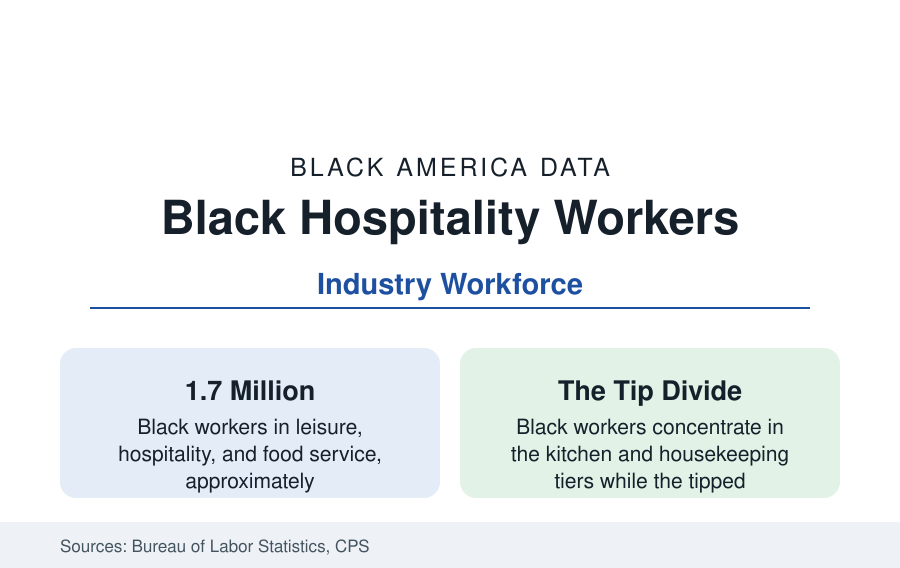

Black Employment
Black Workers in Hospitality and Food Service: The Welcoming Economy's Workforce
About 1.7 million Black workers staff America's hotels, restaurants, and bars — at the service economy's wage floor and its most public face. The BLS data.

Leisure, hospitality, and food service employ roughly 1.7 million Black workers — the waiters and line cooks, housekeepers and bartenders, front desks and dish pits of the economy's most public-facing industry — at its lowest average wages and its most volatile schedules. The industry that sells welcome runs on this workforce, and its data form the service economy's ground floor file. This article reports the hospitality workforce numbers.
The Segments and the Back-of-House Divide
The BLS occupation tables divide the industry by its famous internal wall. Kitchens and housekeeping — cooks, dishwashers, maids and housekeeping cleaners, janitors — employ Black workers at the industry's highest shares; the front of house — servers, bartenders, hosts — records lower Black shares in the national data despite the industry's visible diversity, a distribution the wage studies price precisely: the tipped roles' earnings (server and bartender medians running well above kitchen medians in the occupational data, with fine dining's top end far above) mean the wall is an income wall. The mechanism literature (hiring networks, customer-preference discrimination in the audit and ethnographic studies, the fine-dining segment's gatekeeping) documents how the sorting is made. Fast food — the sector's largest employer — inverts part of the pattern: its counter and kitchen crews are heavily Black and Latino in the metro data, its management ladder the industry's most climbed (the restaurant profile's franchise pipeline begins here), and its wage-floor fights (the Fight for $15's fast-food origins) the era's labor landmark.
Hotels: Housekeeping's City
The hotel workforce is the segment's most organized data: housekeepers (the industry's largest occupation, heavily Black and immigrant women in the gateway and convention metros), the front desk and bell tiers, banquets (the union hotels' aristocracy — banquet servers' earnings at the top of the service scale in the contract cities), and the management pyramid of the hotels profile's ownership story. The union-house model (UNITE HERE's contracts in the big convention cities) posts the file's best economics — wages in the twenties, pensions, workload limits on rooms-per-shift — against the nonunion baseline's mid-teens and the franchised limited-service tier's floor, so the same job title prices three different lives by metro and flag. The pandemic wrote the workforce's hardest chapter here: hospitality absorbed the deepest job losses of any sector (the industry's employment halved in the worst month of 2020 in the BLS data), its Black workforce's recovery path running through the rehiring queues the seniority data govern.
The Tipped Wage and the Schedule
The compensation architecture is unique in the labor data: the federal tipped minimum ($2.13, unchanged since 1991, in the states that retain it) makes the customer's generosity a wage input — and the racial data on tipping (the Cornell consumer research finding Black servers tipped less on average by customers of all backgrounds, and Black customers' tipping patterns confounded by the same service system) convert the dining room's sociology into payroll. The seven no-tip-credit states' natural experiment supplies the comparison data (earnings higher, employment effects contested, poverty among tipped workers lower in the EPI analyses). Scheduling in hospitality follows the retail profile's instability regime with a banquet-and-seasonality accent; the predictive-scheduling laws' city list began substantially in this industry.
The Culinary Ladder and Its Institutions
The industry's skill ladder is real and its Black data are storied: the kitchen brigade's apprenticeship-by-doing, the culinary schools (whose Black enrollment feeds the fine-dining pipeline the chef data then thin — Black executive chefs and chef-owners remain a small, celebrated set in a cuisine economy built substantially on Black culinary traditions, the food-media file's ownership argument in an apron), the hotel management programs (the HBCU hospitality programs — Bethune-Cookman's and others' — as the deliberate counter-pipeline), and the sommelier and beverage credentials' newer cohorts. The James Beard data of the past decade (Black chefs' and restaurateurs' rising share of awards and leadership) are the culture's own census of the ladder being climbed at its top end.
Reading the Hospitality Data
Hospitality is the service economy with its mask off: the welcome is the product, the welcome's producers are Black to a degree the dining public rarely registers, and the industry's internal wall prices the difference between being seen and being hidden. The data's movement — union houses' contracts, wage floors, the culinary ladder's slow integration — is measured shift by shift, in the industry's own units.
More in Black Employment
The Black Unemployment Rate: The Two-to-One Pattern
Black unemployment runs at roughly twice the White rate — 5.5 percent against 3.3 percent in annual averages — a ratio stable across five decades of federal data. How it is measured and why it persists.
Black Median Weekly Earnings: The 80-Cent Ratio
Black full-time workers earn a median of about $900 a week — roughly 80 cents for every dollar White workers earn. The BLS earnings data by group, gender, and occupation.
Black Labor Force Participation: Working at National Rates
Black labor force participation runs at roughly the national rate — and Black women participate at higher rates than White women. The BLS participation data.
Source: U.S. Bureau of Labor Statistics, Current Population Survey and Occupational Employment Statistics; Unite Here union data; Economic Policy Institute service sector analyses.